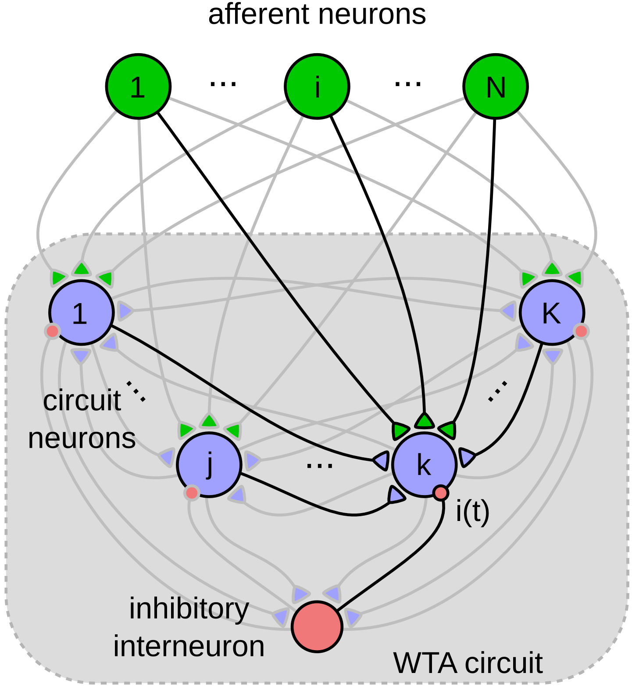
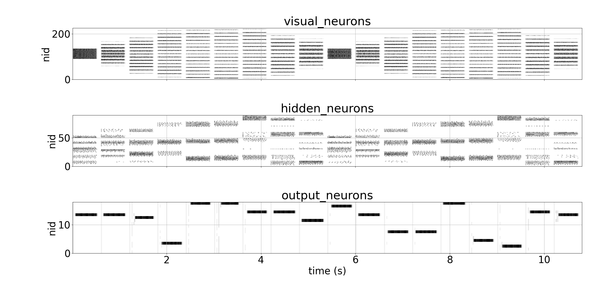

Active Perception

Tactile Exploration of Planar Shapes
WANG SIAO
Oct 25th, 2023
Tactile Memory
Touch Simulation
Stimulus Generator
Simulated Bars

Orientational Map
Visual

Paik, S.-B., & Ringach, D. L. (2011). Retinal origin of orientation maps in visual cortex. Nature Neuroscience, 14(7), 919–925.
Bipolar Gaussian Receptive Field
convolutional kernels

Tactile Population Coding
tactile orientation map

STDP with Winner-Take-All
Lateral Inhibition
Kappel, D., Nessler, B., & Maass, W. (2014). STDP Installs in Winner-Take-All Circuits an Online Approximation to Hidden Markov Model Learning. PLoS Computational Biology, 10(3), e1003511.
Results
Spike Trains
